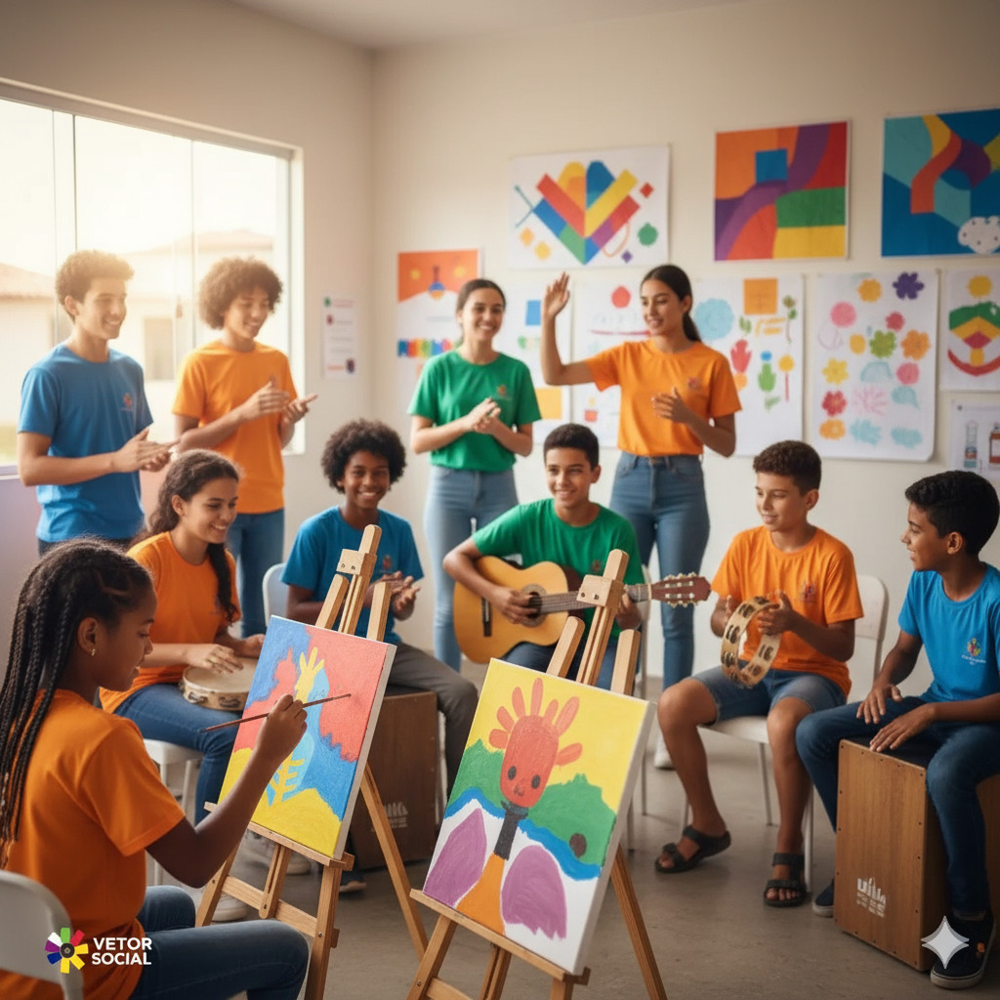
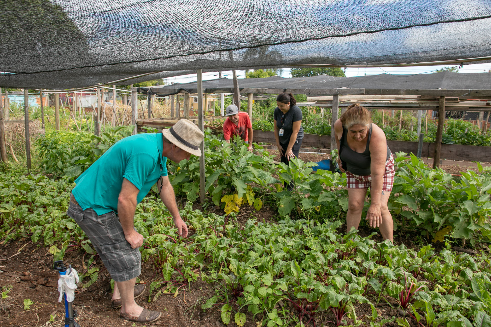
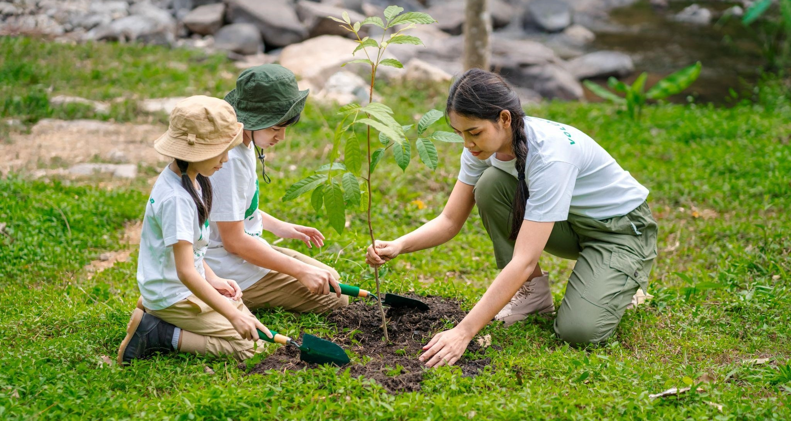

Nossos Projetos
Descubra iniciativas que estão transformando comunidades e faça parte da mudança

Arte e Cultura nas Escolas
O projeto Arte e Cultura nas Escolas leva oficinas de música, teatro, dança e artes visuais para escolas públicas, despertando a criatividade e o senso crítico dos estudantes. A iniciativa valoriza a expressão artística como ferramenta de aprendizado, inclusão, fortalecimento da identidade cultural e conhecimento do seu eu.

Saúde Mental na Comunidade
O projeto Saúde Mental na Comunidade oferece apoio psicológico gratuito para famílias em situação de vulnerabilidade. Por meio de atendimentos individuais, rodas de conversa e oficinas de bem-estar, busca fortalecer vínculos, promover o autocuidado e combater o estigma em torno da saúde emocional.

Educação Digital para Todos
O programa Educação Digital para Todos leva conhecimento em tecnologia a comunidades com pouco acesso à informação. Oferece cursos gratuitos de informática básica e cidadania digital, preparando jovens e adultos para o mercado de trabalho e fortalecendo a inclusão social através da educação.

Horta Comunitária
O projeto Horta Comunitária incentiva o cultivo coletivo de alimentos orgânicos, fortalecendo laços entre moradores e promovendo alimentação saudável. As hortas servem também como espaços de aprendizado sobre sustentabilidade, agricultura urbana e respeito ao meio ambiente.

Alimentação Solidária
O programa Alimentação Solidária oferece refeições nutritivas todos os dias para pessoas em situação de rua, acompanhadas de escuta e orientação social. Além de garantir acesso à alimentação de qualidade, o projeto promove saúde, dignidade e novas possibilidades de reintegração social.

Reflorestamento Urbano
O programa Reflorestamento Urbano atua no plantio de árvores nativas em áreas degradadas das cidades, contribuindo para a recuperação ambiental e o bem-estar coletivo. Além de revitalizar espaços públicos, promove educação ambiental e incentiva a participação da comunidade.